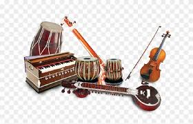

Arts and Crafts
Handicrafts:
Indian handicrafts are renowned worldwide, with each region having its own specialty. Examples include Pashmina shawls from Kashmir, Madhubani paintings from Bihar, and Kanjeevaram silk sarees from Tamil Nadu.
Rangoli:
A traditional art form where patterns are created on the floor using colored powders, flowers, or rice, especially during festivals like Diwali.
Cuisine and Food Traditions
Sweets:

Sweets are an integral part of Indian culture, often associated with celebrations and festivals. Popular sweets include ladoos, jalebi, and barfi.
Spices:
Indian cuisine is renowned for its use of spices, which are not only used for flavor but also for their medicinal properties. Common spices include turmeric, cumin, coriander, and cardamom.
Music and Instruments
Classical Music:
Indian classical music is divided into two main traditions: Hindustani (North India) and Carnatic (South India). Instruments like the sitar, tabla, and veena are integral to these traditions.
Folk Music:

Every region in India has its own folk music, often associated with local festivals, ceremonies, and daily life. Examples include Bhangra from Punjab, Lavani from Maharashtra, and Baul music from Bengal.